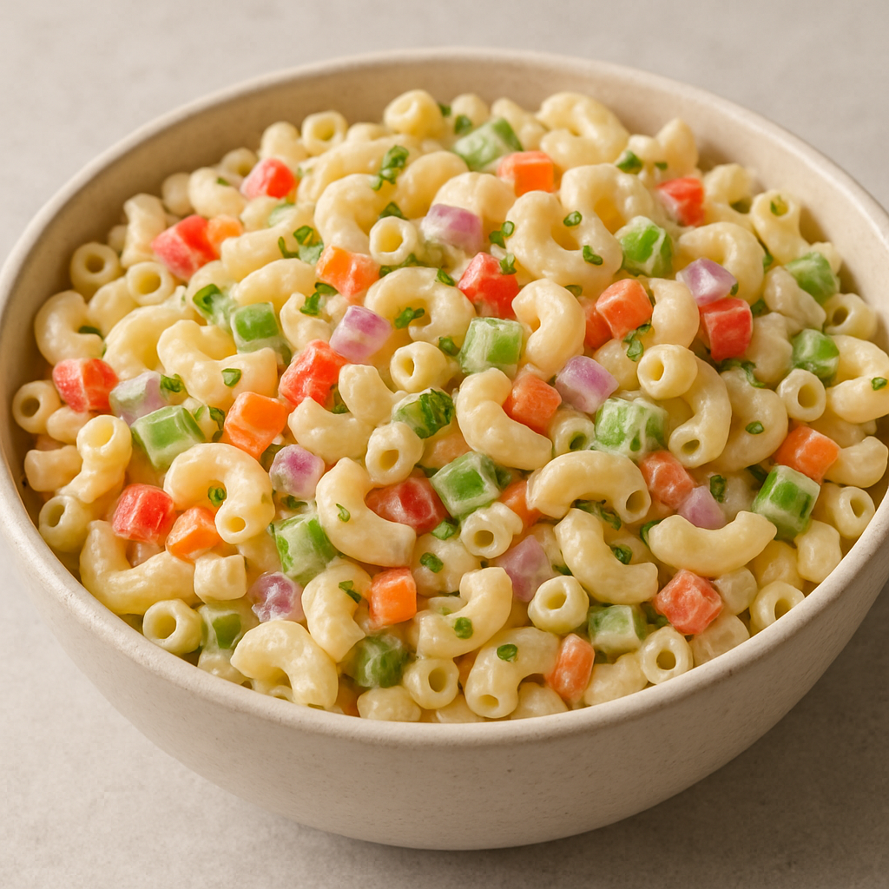

Classic Macaroni Salad

Info
Prep Time:
20 mins
Cook Time:
10 mins
Additional Time
4 hours
Total Time:
4 hrs 30 mins
Descriptiom:
This creamy macaroni salad with celery, onion, green pepper, carrot, and pimentos is easy to make and is the
perfect crowd-pleasing dish to bring to your next picnic or potluck.
Ingredients:
- Macaroni: Of course, you’ll need macaroni pasta!
- Condiments: A creamy blend of mayonnaise and yellow mustard adds tons of flavor.
- Sugar and vinegar: White sugar adds a dose of sweetness, which is
pleasantly balanced by white vinegar. You can, of course, add as much or as little sugar to suit your taste.
- Seasonings: This macaroni salad is simply seasoned with salt and ground black pepper.
- Vegetables: You’ll need celery, an onion, and a bell pepper. Grated carrots and pimento
peppers are optional, but they add welcome flavor and color.
How Do You Make Macaroni Salad?
Here’s a brief overview of what you can expect when you make homemade macaroni salad:
- Cook the macaroni in salted water.
- Mix together mayonnaise, mustard, seasonings, vinegar, and sugar to taste.
- Stir in the macaroni and remaining ingredients. Chill in the refrigerator.
How Long Does Macaroni Salad Last?
This homemade macaroni salad can be stored in an airtight container in the refrigerator for up to five days. We
don’t recommend freezing this recipe, as the noodles will likely become mushy after they are thawed.